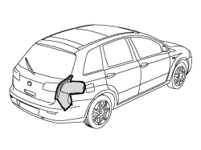
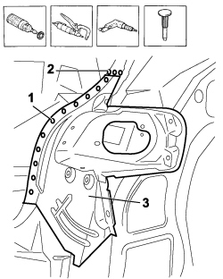
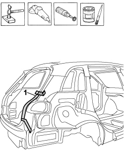
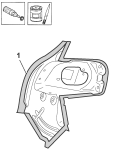
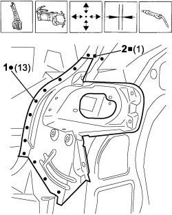
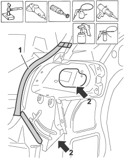

7210B75 R.R. REAR LIGHT CLUSTER HOUSING
- Path
- Procedures > 72 PANELS AND FRAMES > 7210 REMOVING-REFITTING > 7210B STRUCTURAL ELEMENTS (CENTRE AND REAR SECTION) > 7210B75 R.R. REAR LIGHT CLUSTER HOUSING
- Kind
- repair procedure (removal / refitting; the operation number is the code)
- Applies to
- all engines; all production periods
- Interactive page
- https://sloeber94.github.io/elrnDB-fCrm/en/#/194001237
Applies to: all engines; all production periods
 Removing
Removing
 Refitting
Refitting- Check that the components connected are not distorted by checking the bodyshell alignment measurements using suitable equipment (gauges, templates or jigs).
- Straighten the body as necessary.

Applies to: all engines; all production periods
- Use the rotary brush and remove the paint to access the spot welds.
1. Use the chamfering machine to remove the spot welds shown in the diagram.
2. Use the drill and remove the spot welds not accessible with the chamfering machine.
3. Remove the rear light cluster housing.
- Use the hammer and chisel and remove the spot welds chamfered previously.

Applies to: all engines; all production periods
- Straighten the edges of the bodyshell using a hammer and dolly block.
- Remove the spot weld residues using a disc grinder.
- Use a rotary brush to clean the areas treated previously.
1. Apply electro-galvanizing paint.

Applies to: all engines; all production periods
- Working at the bench, remove the anti-corrosion treatment using the rotary brush from both the inside and the outside of the replacement part shown in the diagram.
1. Apply electro-weldable paint to the points treated previously.

Applies to: all engines; all production periods
Refitting
Removing- Position the replacement part correctly on the vehicle and secure it using self-locking clamps.
- Tack the replacement part with several spot welds and remove the self-locking clamps.
- Provsionally fit the tailgate and seal.
- Check that the alignment is perfect and the eveness of the surrounding gap.
- Remove the components used for the adjustment.
1. Use a spot welder in the areas shown in the diagram.
2. Use a MIG welder and weld the openings made previously in the replacement part.

Applies to: all engines; all production periods
- Correct any distortions to the panel using a hammer and dolly block.
- Use a disc grinder to clean and level the areas affected previously by the welding.
- Use a rotary brush to clean the areas treated previously.
1. Apply anti-oxidant protection to the areas involved in the welding.
- Seal the join lines between the replacement part and the vehicle.
- Proceed with the painting stage.
2. Apply wax protection to the inside of the rear light cluster housing.

Applies to: all engines; all production periods